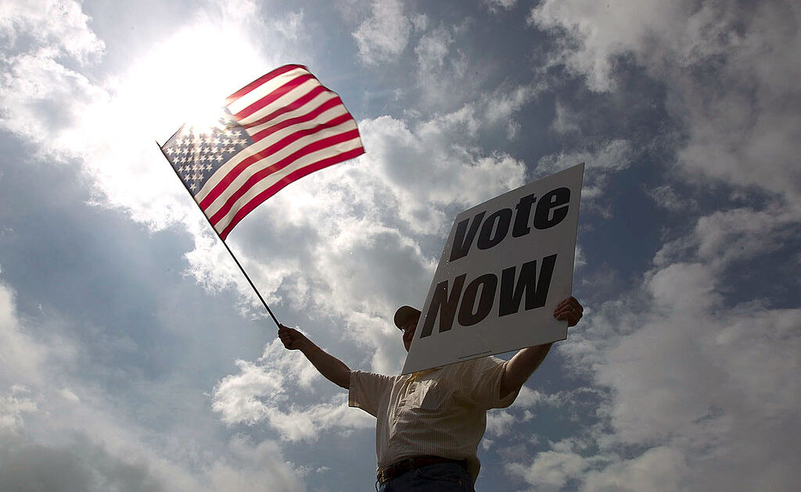

Texas election officials shut out public
OAN Newsroom
The fight for transparency in elections continues.This week, One America’s Christina Bobb attended a certification course for individuals to become election administrators.She has more from Brownsville, Texas.
Posted On: 2021-03-30T00:00:00

Content Date: 2021-03-30
Download Date: 2021-04-16
Document ID: L0C049ZMD